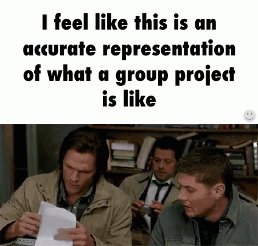

Module 1 · Lesson 1 · 1.1 The Three Forms of Intelligence
Intelligence is not only something an individual person has. It can appear in people, machines, and groups working together.
Big Question Can intelligence exist outside one human mind? | Watch → Read → Apply |
|
Before You Watch Think beyond the individual.Imagine a group chat helping someone choose a college, plan a project, or decide what video, song, or restaurant to try next. Is that one person being intelligent, or is the group acting intelligently together? |
Watch Concept Video 1.1 |
Core Idea
Concept Companion
The video introduces the idea. This section helps you apply it using examples you already know.
Compare
| Type | Where it comes from | Strength | Limitation |
|---|---|---|---|
| Human intelligence | Individual experience, reasoning, memory, emotion, and judgement | Flexible, contextual, creative | Can be biased, tired, distracted, or limited by personal experience |
| Artificial intelligence | Data, algorithms, models, and computing power | Fast, scalable, good at pattern-heavy tasks | Does not understand the world exactly like humans do |
| Collective intelligence | Groups, communities, networks, collaboration, and shared knowledge | Combines many perspectives and areas of expertise | Can suffer from groupthink, misinformation, or coordination problems |
Apply
Open nine intelligence case files. Decide whether the key work comes from one person, a machine using learned patterns, or a group combining what it knows.
Meme-Level Summary

GIF: Tenor
“Three kinds of intelligence enter a group project. The group chat still becomes project manager.”
Intelligence can come from a person, a pattern-learning machine, or a group combining knowledge and coordination.
Stevens Institute of Technology · College of Professional Education · Introduction to Applied AI
Module 1 · AI Hidden in Plain Sight